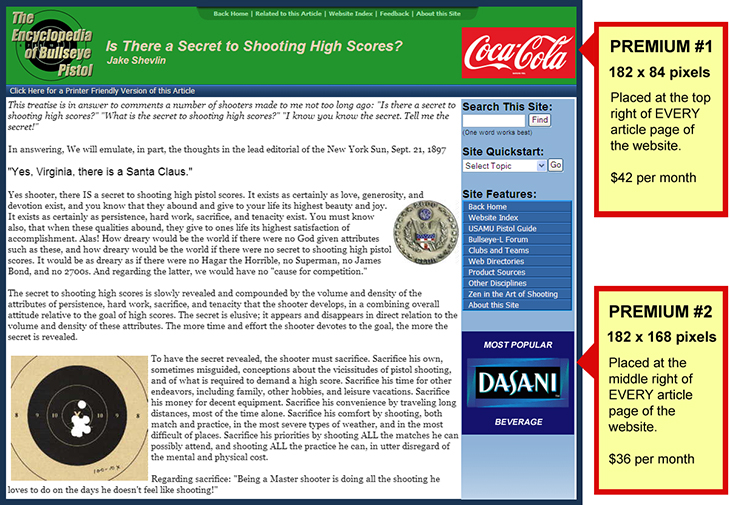

TARGETING YOUR COMPETITIVE SHOOTING AUDIENCE
Competitive shooters are definitely a unique bunch, with specific needs and particular tastes. They are passionate about their equipment and supplies and are typically loyal to their suppliers and manufacturers. That presents a huge problem for those trying to tap into selling to the competitive shooting market. The challenge for the marketer of competition products is to find a medium that has much exposure on a national-level that appeals to this narrow market. Chances are good that they're not going to find it, especially in this unusually tough economy.
THE FALSE PROMISE OF SOCIAL MEDIA
The temptation of exploiting the participants of Facebook with advertising ad nauseam was too much to resist for Mark Zuckerburg and company. Targeting their members with tailored ads based on their interests was the sales pitch to advertisers. Unfortunately for the advertisers, other than getting a few "like" nods, it really is not paying off. It turns out that Facebook users are interested in socializing while on the site, not purchasing stuff from random advertisers. In fact, most Facebook users find the advertisements a nuisance. But for the shooting sports, it doesn't matter anyway. Ads that are in any way firearm-related are forbidden from Facebook.
A TOUGH DECISION TO MAKE
Before you whip out the checkbook and throw money at an advertising campaign, you have to ask yourself some serious questions:
- Is the medium a worthy cause? Or am I just lining the pockets of advertising network executives?
- Will I truly be able to control which websites I am endorsing through my ad impressions?
- Are the ads going to drive real customers to my business? Or attract only the bored and curious?
- Can I really afford up to $3 per click for bored and curious surfers who are merely killing time?
- Forget fancy charts and graphs, what will be the real return on my ad investment in sales?
Utilizing an automated middle-man to handle your Internet advertising might seem quick and effective, but you will lose control of who you endorse. On top of that, you probably won't get the expected bang for your buck in your targeted market: competitive pistol shooters. Internet marketing schemes may have changed over time - but common sense has remained the same as always.
WHY BULLSEYEPISTOL.COM IS DIFFERENT
This website was created and is maintained to serve the interests of competitive pistol shooters; not to profit from them. In the early years alone, our praises from the top shooters, our influence in convincing retired shooters to return to competition and our inspiration to get new shooters involved has permanently stamped its value forever.
We continue to be that focal point for bullseye pistol shooters. Our home page alone has drawn almost three million page views, and its daily average is close to a thousand. With over 30 MB in viewable content and another 5 MB in downloadable multimedia content, there is an enormous amount of information on the website. And while the site is interactive and definitely pleasing to the eye, we prefer to error on the side of simplicity and continuity to make navigating the website an always familiar experience and to make page-loads fast and reliable.
The nature of the site content encourages visitors to return again and again. With a searchable database of over 150 articles and other documents, those seeking the answer to a question or a solution to a problem can find it quickly and easily on the website. New articles are continually being developed not only just in-house, but also by the contributions of top shooters nationwide. Our pages are designed and tested to look good in all of the major Internet browsers, including mobile and tablet applications. Google and other search engines consistently put our website listing at the top for searches related to bullseye pistol shooting.
We believe that we have the proper mission, dedication, content and traffic to be worthy of your advertising support.
WHAT WE CAN OFFER
Our goal is to provide our sponsors with maximum advertising visibility without hindering the navigation of the website. As a result, we elected not to offer advertisements on the very busy homepage as we had concerns about how effective they would be. In addition, we have elected to provide sponsors additional confidence by not rotating ads - a particular space is allocated to one ad and that is it. In the Internet marketing world, that is known as "100% ad impressions per page view," a real rarity these days. It's like buying an ad sign on the outfield wall of a baseball stadium - it is all yours.
We are offering two monthly sponsor packages. In either package, your image ad will appear in a particular page location, on every article in the website, every time it is viewed. The two packages, named PREMIUM #1 and #2 respectively are shown on the sample article page below:

Sponsor packages shall be sold on a first-come basis, one calendar month at a time. That means that sponsorship is very limited.
If you are genuinely interested in sponsoring the Encyclopedia of Bullseye Pistol for one or several months, continue the process by clicking the button below.
Thank you for your support,

John A. Dreyer.
Founder and Webmaster